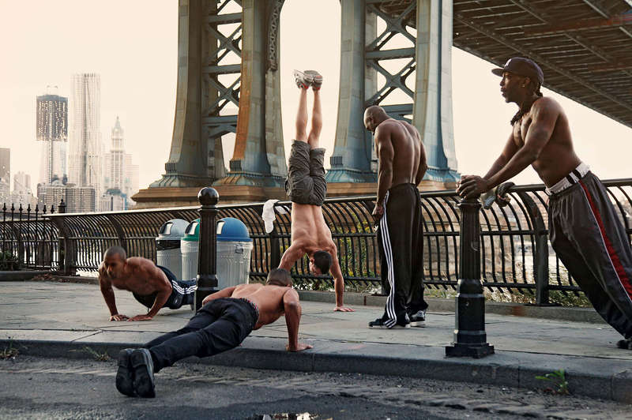

Воркаут (Street Workout) - относительно новый вид спорта,
созданный
как
отдельное движение
только в 21 веке. Своё активное развитие получил после 2010-ых. Многими элемента очень схож
с гимнастикой, но есть существенная разница. Например, в отличие от жёсткого вида спорта
воркаут существует как свободное, ничем не ограниченное направление. Для занятий не
нужно посещать зал или иметь какое-либо специальное оборудование.
Достаточно турника и брусьев. А можно даже и без них. Воркаут нацелен именно на упражнения,
связанные с
различными манипуляциями своего тела. Существует бесконечное
множество
элементов и их
вариаций(в том числе с утяжелением). Главный принцип всегда ОДИН - работа лишь над
собственным телом и весом.